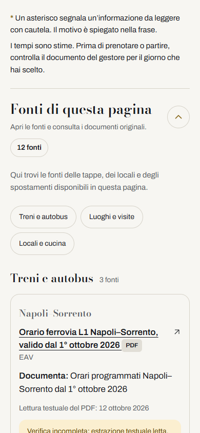
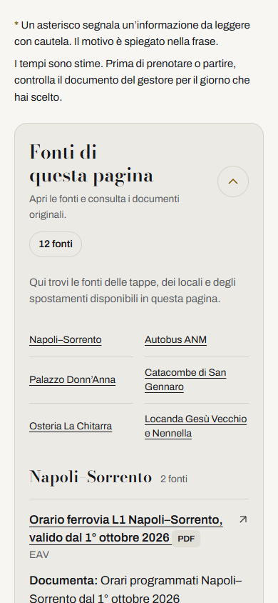
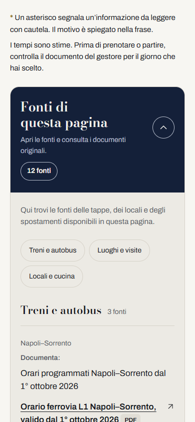
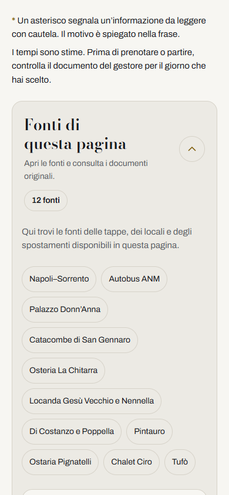

Vai al contenuto
nextstop
· Proposte delle fonti
Confronta le proposte
Usa tema scuro
Quattro aperture, gli stessi documenti.
A · Margine di rivista

B · Indice dei luoghi

C · Dall’informazione alla prova

D · Quaderno di viaggio
